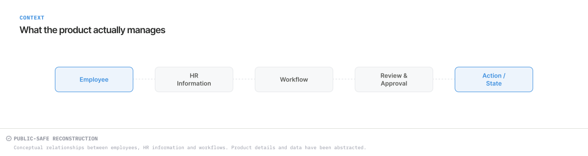
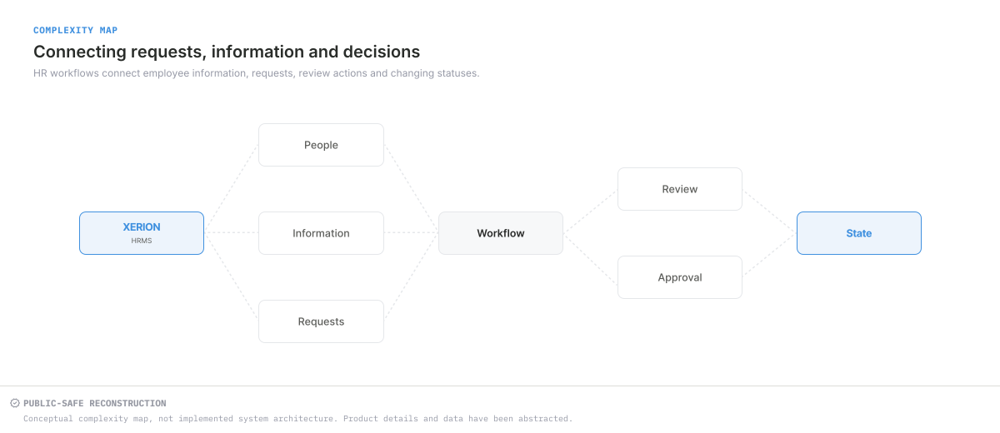
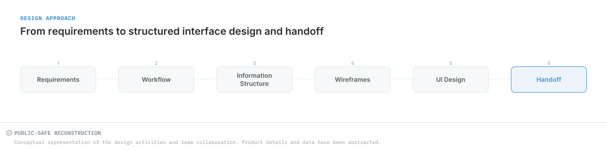
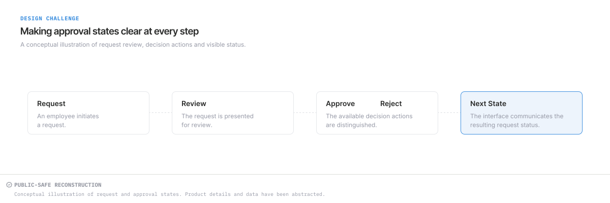
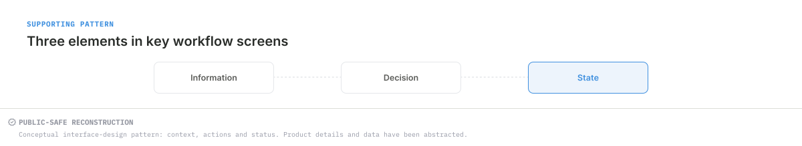
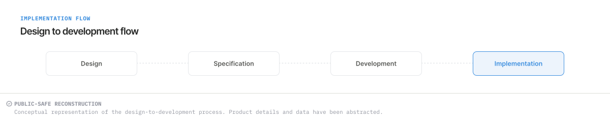

CASE STUDY · ENTERPRISE PRODUCT
Xerion HRMS
Structuring information and actions for everyday HR workflows.
Professional context: work undertaken during my employment at Paramatrix Technologies Limited. These independently recreated, conceptual visuals use abstracted product details and fictional data; they are not original product screenshots.
From an operational overview to a request that needs attention.
The selected dashboard brings together summary counts, request details and visible status. This case study examines how that information is organised for review.
UI/UX design contribution
I contributed to Xerion HRMS within the wider product team. The visual analysis below explains interface choices without attributing ownership of the entire product to me.
01 · CONTEXT
An enterprise product built around people and operational tasks.
Xerion HRMS is an enterprise HR management product involving employee and manager workflows. The selected material focuses on leave requests and approval-related interactions: making information available for review and showing the current status.


02 · WORKFLOW COMPLEXITY
Several levels of information share one workspace.
A reviewer needs an overview of activity as well as the details of individual requests. The reconstruction combines summary counts with employee names, leave types, dates, duration and status. These levels need a clear hierarchy so the overview does not compete with the request list.
Employee requests and manager review are related tasks with different information needs.


03 · MY ROLE & APPROACH
From requirements to structured interface design.
I contributed to UI/UX design within the Xerion product team. Supplied requirements provided the starting point; interface design contributions and team collaboration shaped the work.
The sequence below describes the design activities involved, from understanding workflow context to preparing interface work for handoff. It does not attribute all six stages or the complete system to one designer.


04 · DESIGN CHALLENGE
Keep the request, its status and its actions easy to relate.
The core interface challenge is moving between a broad operational view and a specific request without losing context. Summary information needs to remain distinct from the details used for review, while each row needs to keep its dates, duration and status together.
The conceptual sequence separates the request, its review, available decision actions and the resulting status. This gives the design discussion a clear structure without prescribing product-specific approval rules.


05 · DESIGN DECISIONS
Let structure do the work.
Four choices visible in the conceptual dashboard explain the interface structure.
Separate overview from review
Summary tiles sit above the request table. They provide an overview before the more detailed employee records.
See the interface pattern ↓Give each request a stable structure
Consistent columns align employee, type, dates and duration. The same reading order repeats across rows.
See the interface pattern ↓Name the status explicitly
Approved and Pending appear as words alongside coloured markers. The meaning is not carried by colour alone.
See the interface pattern ↓Keep action space beside the record
The Actions column stays within each request row. The abstract controls indicate placement; they do not document exact action labels or behaviour.
See the interface pattern ↓06 · INTERFACE PATTERNS
Context, available actions and visible status.
Approval-related screens need to communicate what is being reviewed, what actions are available and the status associated with the request. The supporting pattern brings these three concerns together; it is not a claim about every product screen.


07 · SELECTED INTERFACE
Leave Approval Dashboard.

Reading the interface
- Summary pattern: On Leave Today, Pending Approval, Approved and Today’s Total provide different slices of the overview.
- Request pattern: repeated column positions keep related details aligned across the list.
- Status pattern: visible text distinguishes Approved from Pending.
- Action placement: the rightmost column groups abstract action placeholders with each request. Their specific functions are not represented.
08 · DESIGN TO DEVELOPMENT
Communicating interface work across disciplines.
Design, specification, development and implementation are connected parts of the team’s work. The diagram shows that shared context: interface structure and intended behaviour need to remain understandable as work moves between disciplines.
My contribution is presented as UI/UX design; the diagram does not assign engineering ownership or establish a release outcome.


09 · REFLECTION
Clarity comes from the relationships between details.
Separate levels of attention.
An overview and an individual request serve different purposes. Giving them distinct regions supports a clear reading order.
Make state explicit.
Text labels carry status meaning while colour reinforces it. That distinction matters in dense operational interfaces.
Repeat useful structures.
Consistent rows and action placement make a complex workspace coherent without introducing a different pattern for each record.